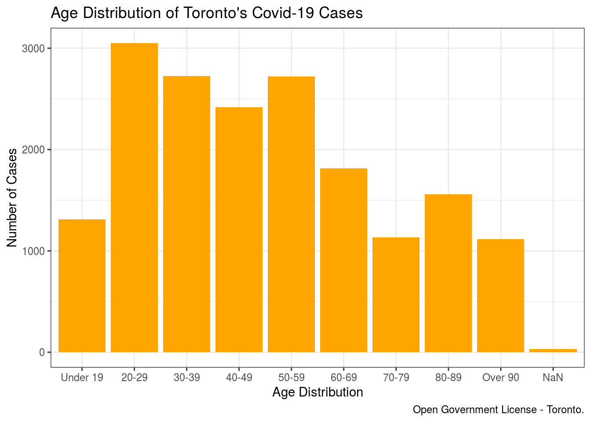
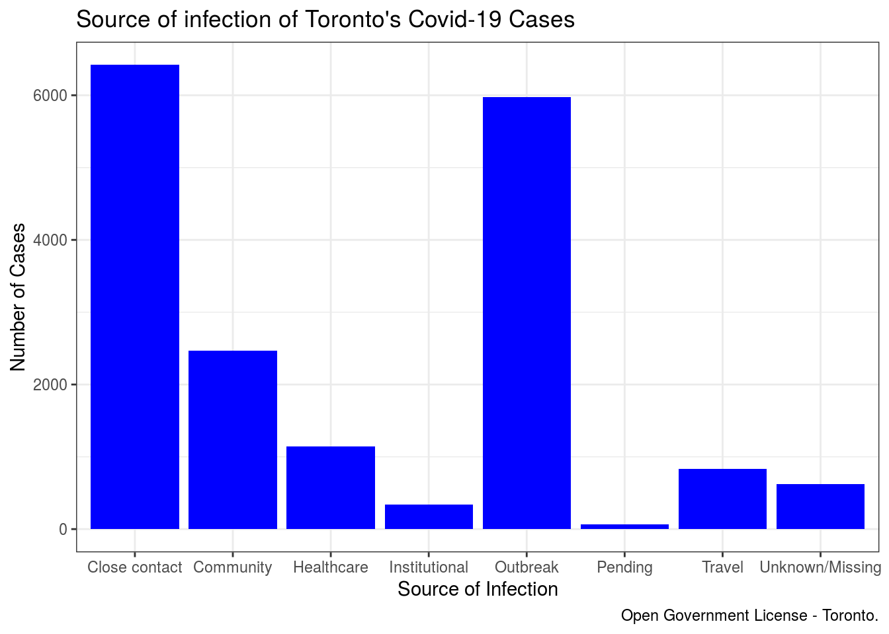
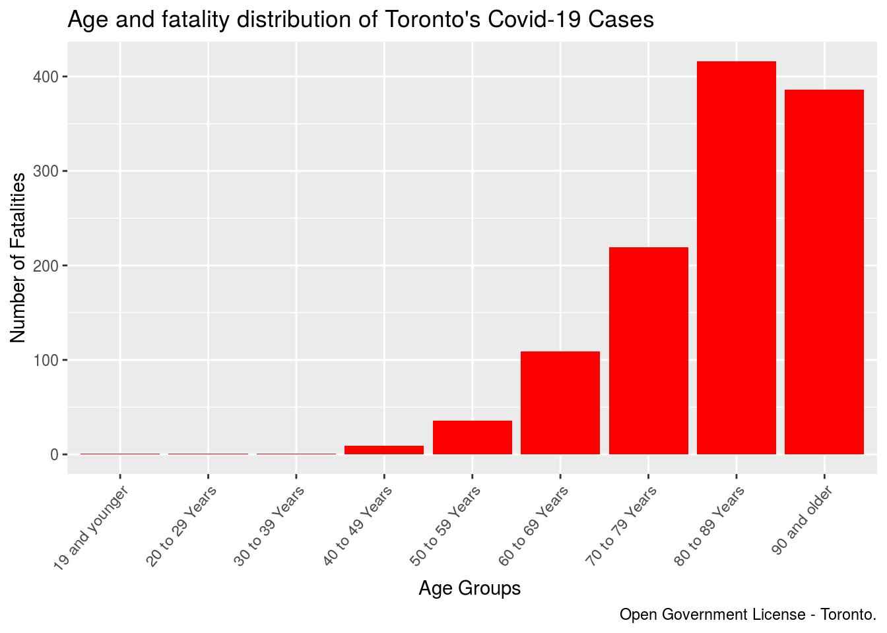
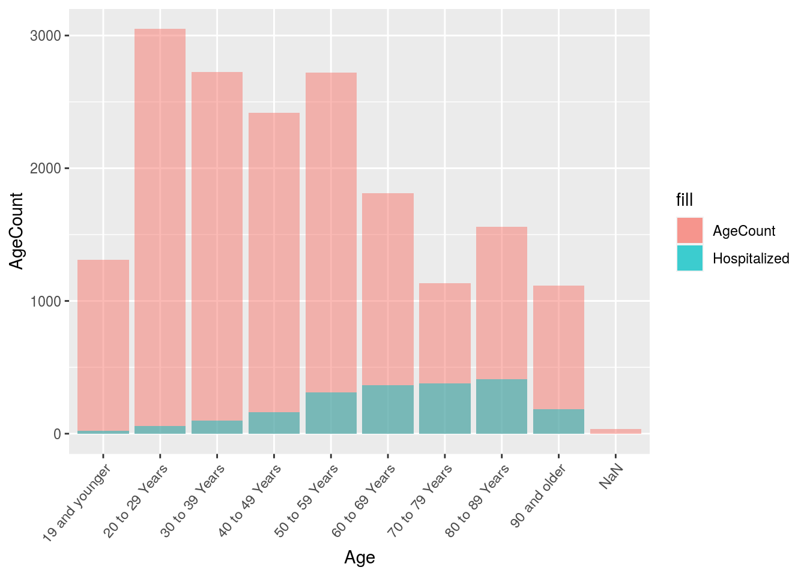

Abstraction
In this paper, we explore the 2019-2020 COVID-19 dataset from Toronto Open Data Portal. This data is important for the wellbeing of Toronto citizens, implicating the severity of virus. Histograms and Bar plots are used to demonstrate the data and results show the source of infection and that the risk of severeness increases with age.
Introduction
Covid-19 (Coronavirus) has been a prevalent disease among Toronto’s residents, and it has been recognized as one of the most urgent health concerns in 2020. As of September 2020, near 30 million cases reported globally resulting in more than 960,000 death. Hence, our interest is to identify the patterns in the dataset.
Data
The COVID-19 Dataset is an open source dataset from Toronto Open Data Portal containing demographic, geographic, and severity information for all confirmed and probable cases reported and managed by Toronto Public Health.
names(dataset)## [1] "_id" "Assigned_ID" "Outbreak Associated"
## [4] "Age Group" "Neighbourhood Name" "FSA"
## [7] "Source of Infection" "Classification" "Episode Date"
## [10] "Reported Date" "Client Gender" "Outcome"
## [13] "Currently Hospitalized" "Currently in ICU" "Currently Intubated"
## [16] "Ever Hospitalized" "Ever in ICU" "Ever Intubated"There are many variables included in this dataset, but for the purpose of this study, we will mainly focus on the “source of infection”, patient’s “Age Group”, “Outcome” of the patient and whether the patient has “Ever Hospitalized”.
Age Distribution Histogram
First, a histogram of the age distribution is computed. The age data are given in groups, each has 10 years range form under 19 to over 90.
dataset %>%
ggplot(aes(x = `Age Group`)) +
geom_histogram(stat="count", fill = 'Orange') +
labs(x = "Age Distribution",
y = "Number of Cases",
title = "Age Distribution of Toronto's Covid-19 Cases",
caption = "Open Government License - Toronto.") +
theme_bw() + scale_x_discrete(labels = c("19 and younger" = "Under 19", "90 and older" = "Over 90",'40 to 49 Years' = '40-49', '20 to 29 Years' = '20-29', '30 to 39 Years' = '30-39', '50 to 59 Years' = '50-59','60 to 69 Years' = '60-69', '70 to 79 Years' = '70-79','80 to 89 Years' = '80-89')) From the age distribution histogram, we can see that the data is relatively normal distributed comparing to other graphs, where adults and middle aged residents are the main target of this virus, residents under 19 and above 70 have lower number of cases. This might be because that adults and middle aged adults has to work in open enviroment, and therefore more likely to have contact with others.
Source of Infection Histogram
Second, the source of infection is important for us to find out how the Coronavirus is transmitted and what can we do to avoid infection.
dataset %>%
ggplot(aes(x = `Source of Infection`)) +
geom_histogram(stat="count", fill = 'blue') +
labs(x = "Source of Infection",
y = "Number of Cases",
title = "Source of infection of Toronto's Covid-19 Cases",
caption = "Open Government License - Toronto.") +
theme_bw() + scale_x_discrete(labels = c("N/A - Outbreak associated" = "Outbreak" ))
From the source histogram, we can tell that most of the infections comes from close contact with existing patients, or associated with the outbreak of the pandemic. This confirms the importance of remaining social distancing, avoid contact with large crowd.
Fatality Distribution Histogram
Moreover, fatality is another important factor that we need to examine in order to find out who is more volunerable towards this virus.
AgeFatality <- subset(dataset, dataset$"Outcome" == "FATAL")
AgeFatality %>%
ggplot(aes(x = `Age Group`)) +
geom_histogram(stat="count", fill = 'red') +
labs(x = "Age Groups ",
y = "Number of Fatalities",
title = "Age and fatality distribution of Toronto's Covid-19 Cases",
caption = "Open Government License - Toronto.") +
theme(axis.text.x = element_text(angle = 50, hjust = 1))
The above graph is very skewed and although from the previous graph that there are more infected cases for adults aged 20 to 60 but the fatality graph above shows that there are actually more fatal cases for elder adults from 60-90, indicating that younger people are more likely to be recovered from the virus and elder people are more vulnerable towards this virus.
Hospitalzed Percentage Bar-Plot
The dataset also records whether the patient has ever been hospitalized, this data is necessary for us to find out the hospitalize rate in order for better medical preparation and hospital capacities.
dataset$`Ever Hospitalized` <- ifelse(dataset$`Ever Hospitalized` == "Yes", 1, 0)
d4 <- dataset %>%
group_by(`Age Group`) %>%
summarise(AgeCount= n())## `summarise()` ungrouping output (override with `.groups` argument)d3 <- dataset %>%
group_by(`Age Group`) %>%
summarise(`Hospitalized` = sum(`Ever Hospitalized`))## `summarise()` ungrouping output (override with `.groups` argument)d5 <-merge(d4, d3)
d5 <- rename(d5, 'Age' = 'Age Group')
ggplot(d5) +
geom_col(aes(x = Age, y = AgeCount, fill = "AgeCount"), alpha = 0.5) +
geom_col(aes(x = Age, y = Hospitalized, fill = "Hospitalized"), alpha = 0.5) +
theme(axis.text.x = element_text(angle = 50, hjust = 1))
From the bar plot above, Hospitalization rates increase with age and are highest among elders. Adults in there 60’s to 90’s are more likely to be hospitalized, which is consistent with the fatality histogram above.
Conclusion and Discussion
Overall, the figures above shoes that most of the current reported cases are infected by close contact with existing patients or associated with the outbreak of the virus. To prevent the spread of the virus, maintaining social distancing is necessary. Moreover, although all age groups are at risks with this disease, but fatality and hospitalization rate are increased with age indicating that elders are more vulnerable for this disease and therefore should be more careful.
Weakness and Future work
This study is done with the existing current data uploaded by Toronto’s open data portal. The fatality and Hospitalization are likely to change once the data has been updated(daily basis). The dataset population are also based on Toronto residents, where health-care systems in Toronto are likely to be different with other regions which could lead to different fatality/hospitalization, hence different regions could also be considered for future work.
Reference
Citations:
opendatatoronto Sharla Gelfand (2020). opendatatoronto: Access the City of Toronto Open Data Portal. https://sharlagelfand.github.io/opendatatoronto/, https://github.com/sharlagelfand/opendatatoronto/.
tidyverse Wickham et al., (2019). Welcome to the tidyverse. Journal of Open Source Software, 4(43), 1686, https://doi.org/10.21105/joss.01686
dplyr Hadley Wickham, Romain François, Lionel Henry and Kirill Müller (2020). dplyr: A Grammar of Data Manipulation. R package version 1.0.1. https://CRAN.R-project.org/package=dplyr
rmarkdown JJ Allaire and Yihui Xie and Jonathan McPherson and Javier Luraschi and Kevin Ushey and Aron Atkins and Hadley Wickham and Joe Cheng and Winston Chang and Richard Iannone (2020). rmarkdown: Dynamic Documents for R. R package version 2.3. URL https://rmarkdown.rstudio.com.
Yihui Xie and J.J. Allaire and Garrett Grolemund (2018). R Markdown: The Definitive Guide. Chapman and Hall/CRC. ISBN 9781138359338. URL https://bookdown.org/yihui/rmarkdown.
ggplot2 H. Wickham. ggplot2: Elegant Graphics for Data Analysis. Springer-Verlag New York, 2016.
Blogdown Yihui Xie (2020). blogdown: Create Blogs and Websites with R Markdown. R package version 0.20.